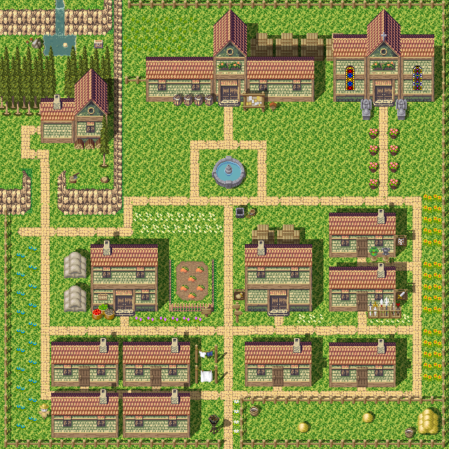

<html>

<head>
    <style>
        * {
            margin: 0;
            padding: 0;
            border: 0
        }

        div#container {
            position: absolute;
            margin: 50px;
            width: 640px;
            height: 640px;
        }

        img#map {
            width: 100%;
            height: 100%;
        }

        div#viewer {
            position: absolute;
            width: 240px;
            height: 240px;
            border: 4px solid red;
            top: 50px;
            left: 50px;
            transition-timing-function: linear;
            display: none;
            transform: translate(0px, 390px);
        }

        div#container>div#viewerTransparent {
            position: absolute;
            width: 240px;
            height: 240px;
            top: 0px;
            left: 0px;
            transition-timing-function: linear;
            transform: translate(0px, 390px);
        }

        div#canvasContainer {
            position: absolute;
            width: 640px;
            height: 640px;
            left: 50px;
            top: 700px;
            border: 10px solid red;
        }

        div#test {
            position: absolute;
            top: 800px;
            left: 200px;
            margin-bottom: 200px;
        }
        .npc {
            position: absolute;
            left: 0px;
            top: 0px;
        }
    </style>
    <script src="npc.js"> </script>
    <script src="main.js"> </script>
</head>

<body>

    <div id="container">
        <!--  -->
        <div id="viewerTransparent"></div>
        <canvas id="mapCanvas" width=640 height=640></canvas>
    </div>
    <div id="viewer"></div>

    <div id="canvasContainer">
        <!--  -->
        <canvas id="canvasRender" width=640 height=640></canvas>
    </div>

    <div id="test">
        <!--  -->
    </div>

</body>


</html>